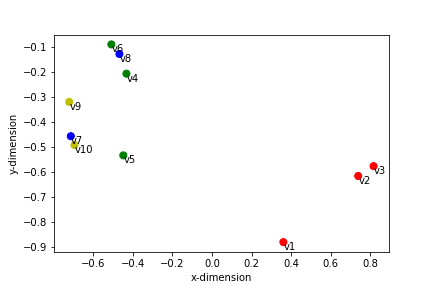
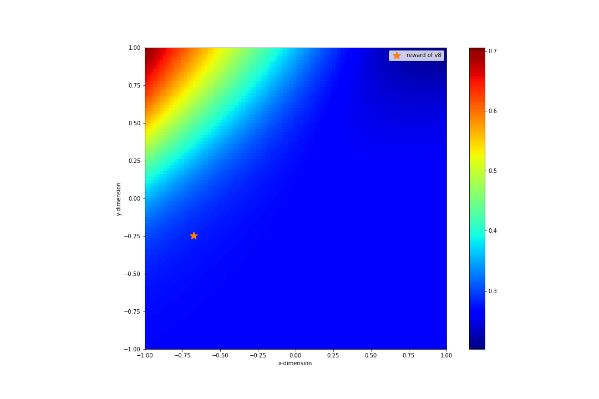

"Think hard, and work smartly." - R.C.T. Lee & Maw-Shang Chang "Every job is a self-portrait of the person who did it. Autograph your work with quality." - Prof. D. T. Lee
Welcome to the Economics and Computation Laboratory!
We are interested in algorithm design and analysis, machine learning theories, algorithmic game theory and
online learning algorithms. With applications in the real world, we delve into the impact of theories in practical.
We not only focus on theories but also aim at hands-on implementation of them. We also regularly join the
Machine Learning Seminar in Institute of Information Science, Academia Sinica, held by Professor Chi-Jen Lu,
to discuss the latest advances in machine learning.
If you are interested in these related topics, please join us without any hesitation!
Click the mannul (研究生指南) to see the guide for graduate students to survive in our lab.
Resources and Prerequisites
Introduction to the Design and Analysis of Algorithms: a strategic approach.
R. C. T. Lee, S. S. Tseng, R. C. Chang, Y. T. Tsai, McGraw-Hill Education, 2006.
Probability and Computing: Randomization and Probabilistic Techniques in Algorithms and Data Analysis. Second Edition.
M. Mitzenmacher and E. Upfal, Cambridge University Press, 2017.
Twenty Lectures on Algorithmic Game Theory.
T. Roughgarden, Cambridge University Press, 2016.
A Modern Introduction to Online Learning.
F. Orabona (in progress). arXiv.
Mathematics for Machine Learning.
Marc Peter Deisenroth, A. Aldo Faisal, and Cheng Soon Ong. Cambridge University Press. 2020.
List of unsolved problems in fair division: [link]
Our Focus
Design and Analysis of Algorithms
Machine Learning Theory
Data Science
Algorithmic Game Theory
Online Learning
Computational Social Choice
Quantitative Finance
Ongoing Projects
Game Theoretical Aspects in Modeling and Analyzing Party Election Campaign. Grant No. NSTC 110-2222-E-032-002-MY2. April 2021–March 2023.
A Study on Group Competition Game of Real-Policy Making Based on Equilibria Existence and Gradient Algorithms. Grant No.: NSTC 112-2221-E-032-018-MY3. August 2023–July 2026.

Grouped Muti-agent Learning with RegularizersGrouped Muti-agent Learning without RegularizersThe changes of reward images of v9 (with regularization)

The changes of reward images of v9 (without regularization)

{kind=link}